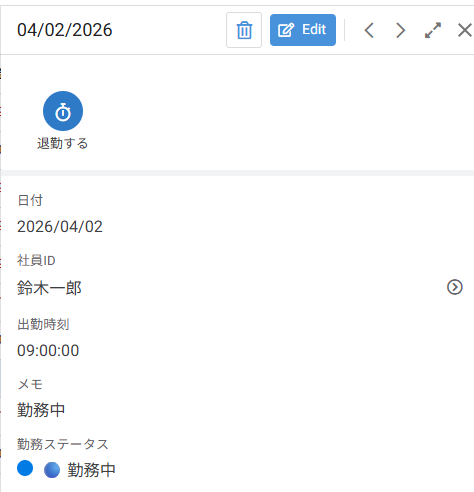
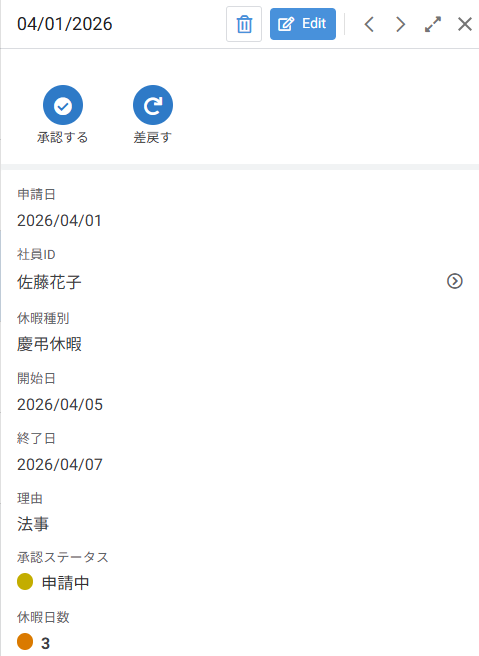
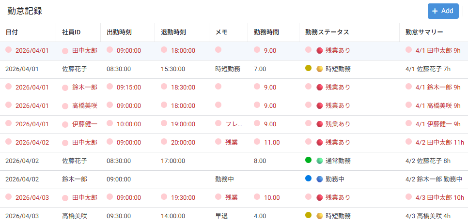
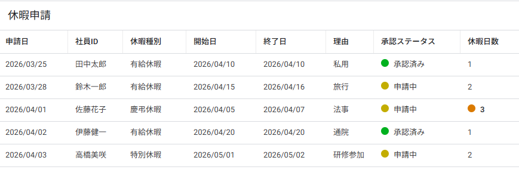

アプリの全体像を知ろう
📁 練習用ファイル（ダウンロード）
-
1
クリックすると Google ドライブにコピーが作成されます。そのまま中級編の教材として使用してください。
-
2
中級編の完成版アプリです。迷ったときに参照してください。リンクをクリックするとブラウザで開きます。
1-1 中級編で作るアプリと学ぶこと
中級編では、「勤怠管理アプリ」 を1本完成させます。 社員が出勤・退勤をスマートフォンから打刻し、勤務時間を自動計算。休暇申請もアプリ内で完結させる実用的なアプリです。
初級編で学んだ基本操作（Data / Views / Actions / Automation）をベースに、Valid If による入力制御、Slice によるデータ絞り込み、実用関数、Format Rules による条件付き書式、Action によるボタン操作 など、一歩進んだテクニックを身につけます。
アプリ名：勤怠管理アプリ
目的：社員の出退勤記録・勤務時間の自動計算・休暇申請の管理
使用場面：社員がスマホから出退勤を打刻し、管理者が勤務状況を一覧確認する
データソース：Google スプレッドシート（3シート構成）
前提条件：初級編（備品管理アプリ）を修了していること
■ 中級編で学ぶ主なテーマ
| 章 | テーマ | 学べること |
|---|---|---|
| 第2章 | データ設計 | 3テーブル構成・マスタテーブルの活用・Ref / Enum の実践 |
| 第3章 | Valid If（入力制御） | 入力値の制限・ドロップダウンの動的フィルタリング |
| 第4章 | Slice（絞り込み） | 条件式でデータを絞り込み・ユーザー別ビューの作成 |
| 第5章 | 実用関数 | IF / IFS / HOUR / TEXT / CONCATENATE で勤務時間を自動計算 |
| 第6章 | Format Rules | 条件付き書式・ステータス別の色分け・アイコン表示 |
| 第7章 | Action | 退勤打刻ボタン・承認／差戻しアクション・表示条件 |
| 第8章 | Automation 応用 | 複数条件Bot・休暇申請の承認通知・Scheduled Bot |
| 第9章 | トラブルシューティング | よくあるエラーと対処法・上級編への架け橋 |
1-2 初級編との違い ─ ステップアップのポイント
初級編と中級編の違いを把握しておくと、学習のポイントがつかみやすくなります。
🌱 初級編（備品管理アプリ）
- テーブル：2つ（備品一覧・貸出履歴）
- リレーション：単純なRef（1対多）
- 入力制御：なし
- データ絞り込み：なし
- 関数：TODAY() / UNIQUEID() 程度
- 見た目：テーマカラー変更のみ
- Automation：メール通知1つ
🚀 中級編（勤怠管理アプリ）
- テーブル：3つ（社員マスタ・勤怠記録・休暇申請）
- リレーション：複数Ref＋マスタ参照
- 入力制御：Valid If で動的フィルタ
- データ絞り込み：Slice でユーザー別表示
- 関数：IF / IFS / HOUR / TEXT / CONCATENATE 等
- 見た目：Format Rules で条件付き書式
- Action：退勤打刻・承認・差戻しボタン
- Automation：複数条件Bot・承認通知
1-3 完成アプリのイメージ
中級編で完成する勤怠管理アプリの画面イメージです。ゴールが見えていると、各章の作業が理解しやすくなります。
■ 完成画面イメージ（4画面）




1-4 データ構成（テーブル設計）の全体像
勤怠管理アプリでは 3つのテーブル（シート） を使用します。 初級編では2テーブルでしたが、中級編ではマスタテーブル（社員マスタ）を加えた3テーブル構成にステップアップします。
（マスタテーブル）
データ
申請データ
■ テーブル① ：社員マスタ
社員の基本情報を管理する マスタテーブル です。勤怠記録・休暇申請からRefで参照されます。
| 社員ID | 氏名 | 部署 | メールアドレス | 入社日 |
|---|---|---|---|---|
| E001 | 田中太郎 | 営業部 | tanaka@example.com | 2022/04/01 |
| E002 | 佐藤花子 | 総務部 | sato@example.com | 2023/04/01 |
| E003 | 鈴木一郎 | 開発部 | suzuki@example.com | 2021/10/01 |
■ テーブル② ：勤怠記録
日々の出勤・退勤データを記録するテーブルです。勤務時間は Virtual Column で自動計算 します。
| 記録ID | 社員ID | 日付 | 出勤時刻 | 退勤時刻 | 勤務時間 | メモ |
|---|---|---|---|---|---|---|
| A001 | E001 | 2026/04/01 | 09:00 | 18:00 | 9.0h | |
| A002 | E002 | 2026/04/01 | 08:30 | 15:30 | 7.0h | 時短勤務 |
| A003 | E003 | 2026/04/02 | 09:00 | ─ | ─ | 勤務中 |
■ テーブル③ ：休暇申請
有給・休暇の申請データを管理するテーブルです。承認ステータスを Enum型 で管理し、Format Rules で色分け表示します。
| 申請ID | 社員ID | 申請日 | 休暇種別 | 開始日 | 終了日 | 理由 | 承認ステータス |
|---|---|---|---|---|---|---|---|
| V001 | E001 | 2026/03/25 | 有給休暇 | 2026/04/10 | 2026/04/10 | 私用 | 承認済み |
| V002 | E003 | 2026/03/28 | 有給休暇 | 2026/04/15 | 2026/04/16 | 旅行 | 申請中 |
| V003 | E002 | 2026/04/01 | 慶弔休暇 | 2026/04/05 | 2026/04/07 | 法事 | 申請中 |
1-5 全体の作成フロー ─ 8ステップで完成！
勤怠管理アプリは、以下の 8つのステップ で完成します。 各ステップがこのマニュアルの第2章～第9章に対応しています。
設計する 第2章
設定する 第3章
絞り込む 第4章
自動計算 第5章
シューティング 第9章
で自動化 第8章
ボタン操作 第7章
整える 第6章
■ 各ステップの詳細
| STEP | 対応章 | 作業内容 | 所要時間 |
|---|---|---|---|
| STEP 1 | 第2章：データ設計 | 3テーブル（社員マスタ・勤怠記録・休暇申請）を作成し、Ref / Enum を設定する | 約40分 |
| STEP 2 | 第3章：入力制御 | Valid If で入力値の制限・ドロップダウンの動的フィルタリングを設定する | 約30分 |
| STEP 3 | 第4章：Slice | Slice を作成し、ログインユーザーの勤怠データのみ表示するビューを構築する | 約30分 |
| STEP 4 | 第5章：関数 | IF / HOUR / TEXT 等の関数で勤務時間の自動計算・表示フォーマットを設定する | 約40分 |
| STEP 5 | 第6章：Format Rules | 条件付き書式でステータス別色分け・残業行ハイライト・アイコン表示を設定する | 約30分 |
| STEP 6 | 第7章：Action | 退勤打刻・承認・差戻しボタンを作成し、表示条件とアイコン・色を設定する | 約30分 |
| STEP 7 | 第8章：Automation | 休暇申請時の承認通知Bot・複数条件による自動処理を構築する | 約40分 |
| STEP 8 | 第9章：FAQ | よくあるトラブルの対処法を確認し、上級編への準備をする | 約20分 |
以上で第1章は終了です。中級編で作る勤怠管理アプリの全体像と、学習のロードマップがつかめたでしょうか。
次の第2章では、いよいよ3テーブル構成のデータを設計し、アプリの土台を構築していきます。